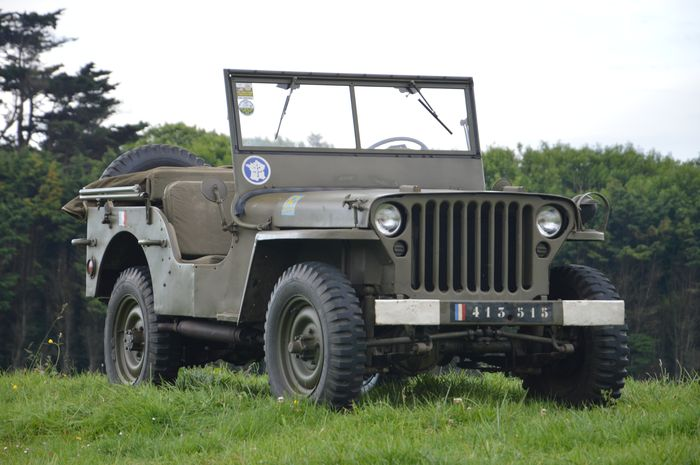
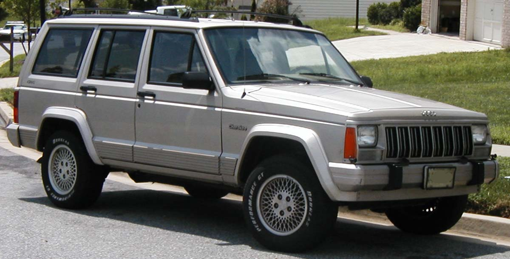
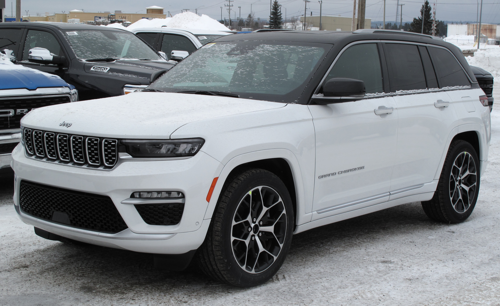
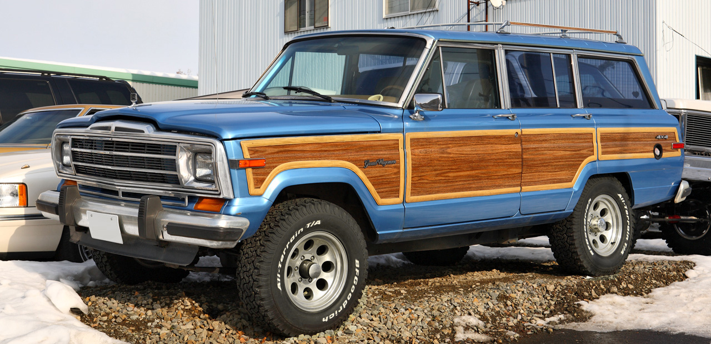
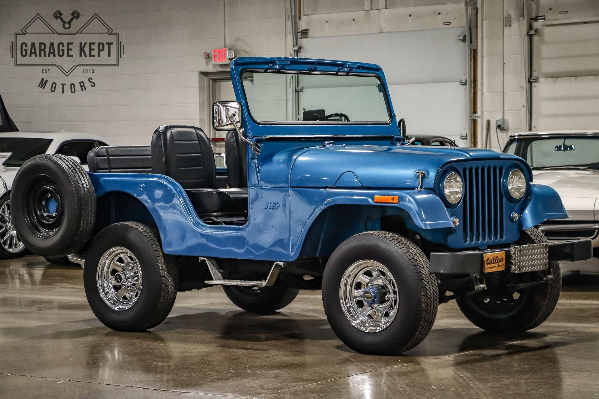
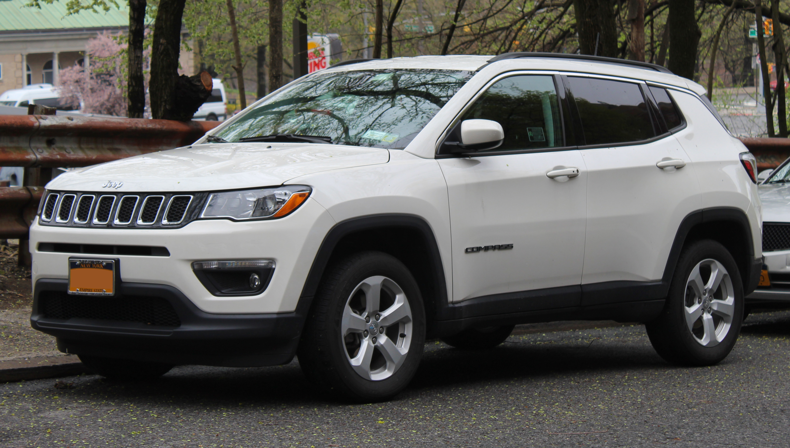

Iconic Models

Willys MB / Ford GPW (1941-1945)
1941-1945
The original Jeep. Over 600,000 built for WWII. Lightweight, rugged, and versatile. The grandfather of all off-road vehicles.
- 2.2L 4-cylinder, 60 hp
- 2,400 lbs
- WWII legend
- Go-Devil engine

Jeep Wrangler
1987-present
The direct descendant of the original Jeep. Solid axles, removable doors and top, and legendary off-road capability. The ultimate 4x4.

Jeep Cherokee XJ
1984-2001
Revolutionary unibody SUV. Lighter, more efficient, and hugely successful. The XJ created the modern compact SUV segment and has a massive cult following.

Jeep Grand Cherokee
1993-present
The luxury SUV that defined the segment. Combined off-road capability with on-road comfort and luxury. Four generations, millions sold.

Jeep Wagoneer / Grand Wagoneer
1963-1991, 2022-present
The first luxury 4x4. Woodgrain sides, luxurious interior, and ahead of its time. Revived in 2022 as a full-size luxury SUV.

Jeep CJ-5
1954-1983
The longest-running CJ. Over 600,000 built. The definitive post-war Jeep, loved by farmers, off-roaders, and enthusiasts.

Jeep Gladiator
2020-present
The Wrangler-based pickup. Removable doors and top, off-road capability, and a truck bed. The ultimate adventure vehicle.

Jeep Compass
2007-present
The compact crossover, bringing Jeep capability to a smaller, more efficient package.